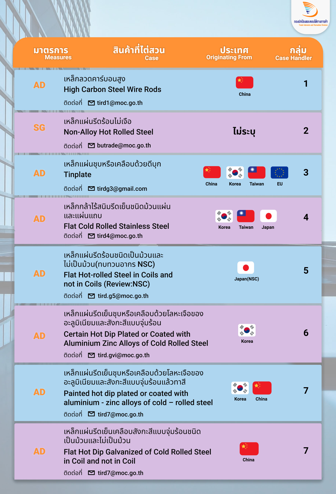

มาตรการปกป้องและตอบโต้ทางการค้า

การค้าเป็นสิ่งคัญที่ทุกประเทศจะนำมาใช้ในการพัฒนาประเทศให้เจริญรุ่งเรือง และเป็นกลไก สำคัญที่จะพัฒนาประเทศ แต่เนื่องจากการผลิตสินค้าในประเทศนั้น อาจมีค่าแรงสูงและกระบวนการผลิตที่ทำให้สินค้ามีราคาสูงจึงเป็นเรื่องปกติที่คนในประเทศจะใช้สินค้านำเข้าราคาถูกจากประเทศอื่น เช่น จีน หรือเวียดนาม ที่มีค่าแรงขั้นต่ำราคาถูก ที่มาโจมตีสินค้าภายในประเทศได้ กรณีนี้จึงต้องมีมาตรการป้องกันเศรษฐกิจและสินค้าภายในประเทศตนเอง เพื่อให้คนในประเทศหันมาอุดหนุนสินค้าของประเทศตนเอง โดยองค์การการค้าโลกได้มีวิธีที่จะให้ประเทศสมาชิกใช้มาตรการต่าง ๆ เพื่อป้องกันการทุ่มตลาดจากประเทศอื่น ๆ ได้เช่น มาตรการตอบโต้การทุ่มตลาด (Anti-dumping: AD) และมาตรการตอบโต้การอุดหนุน (Countervailing Duty: CVD), มาตรการสนับสนุนของรัฐ รวมทั้งใช้เป็นมาตรการทางการค้า ที่ประเทศผู้นำเข้าใช้เพื่อปกป้องอุตสาหกรรมภายในที่ได้รับความเสียหาย หรือมีแนวโน้มที่จะได้รับความเสียหาย อันเกิดจากการนำเข้าสินค้าจากต่างประเทศที่ไม่เป็นธรรม มีรายละเอียดของมาตรการต่าง ๆ ดังนี้
Anti-dumping: AD Countervailing Duty: CVD Safeguard Measure: SG
สินค้าที่ไทยใช้มาตรการล่าสุด

ที่มา : กองปกป้องและตอบโต้ทางการค้า.
ปรับปรุงล่าสุดเมื่อ 15/05/2563